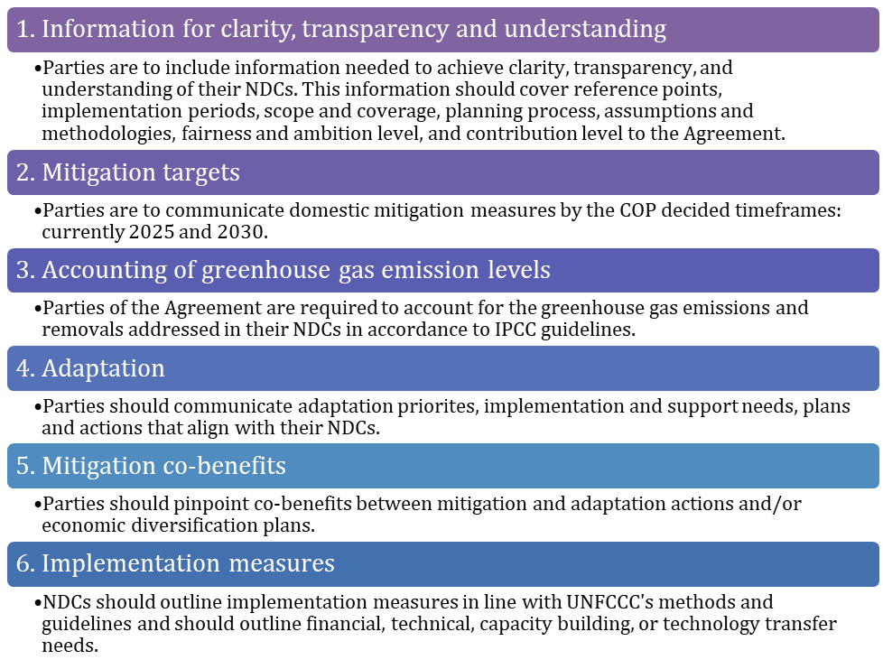
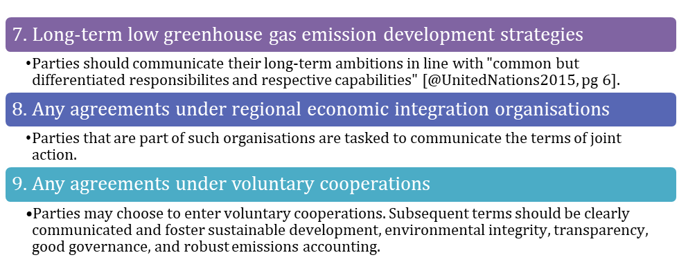
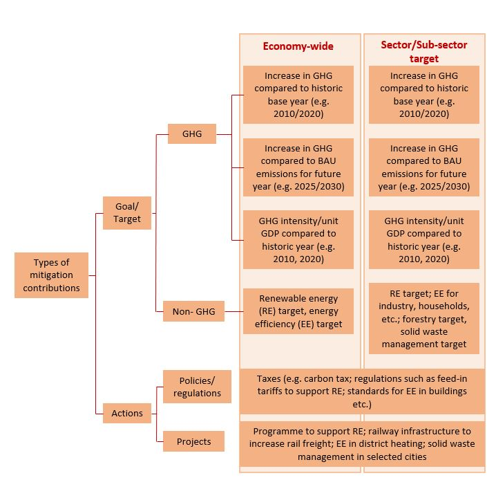
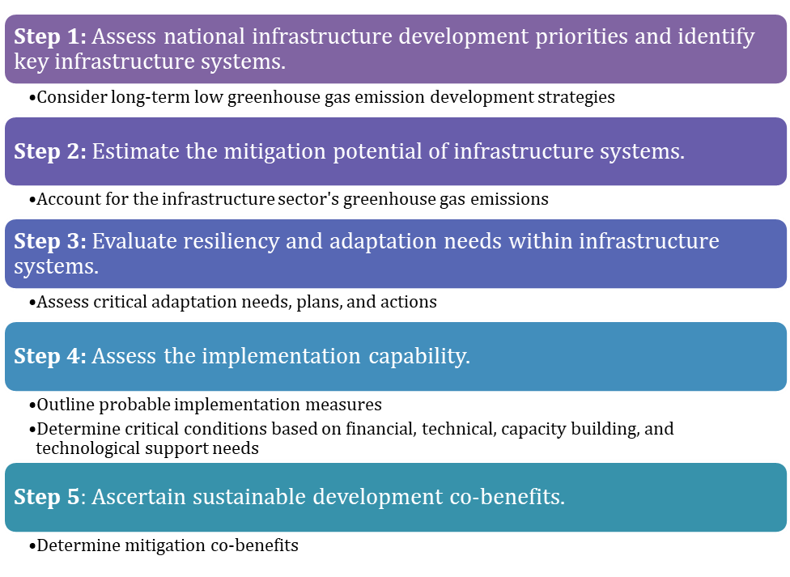
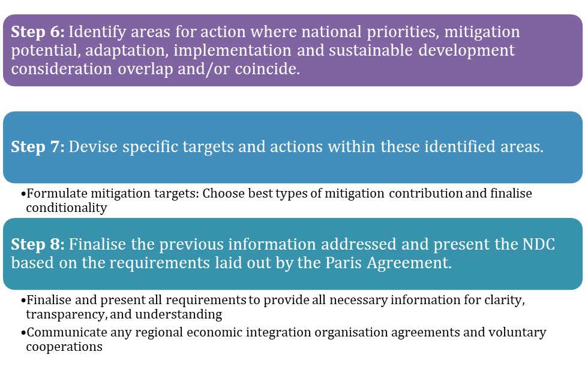

This mini-lecture delves deeper into understanding Nationally Determined Contributions (NDCs) by taking a closer look at the NDCs’ requirements and varying responsibilities as well as the types of mitigation targets. The mini-lecture also proposes an approach to developing infrastructure targets and presents examples from varying contexts.
The Paris Agreement requires signatories to submit increasingly ambitious Nationally Determined Contributions (NDCs) every five years. The Agreement’s Parties were to submit their first NDCs upon ratification, acceptance, or approval of the Paris Agreement. Subsequent NDCs were due by 2020 and every five years thereafter (United Nations 2015). Most Parties submitted their first NDCs in 2016 and many were expected to submit their second NDCs by the 26th Conference of the Parties (COP26) of the UNFCCC which was originally scheduled for 2020. However, due to challenges brought about by the COVID-19 pandemic, COP26 has been postponed to 2021 and updated NDCs are to be submitted as the year progresses. According to the NDC registry, of the 196 Parties to the Agreement, 191 Parties have submitted their first NDCs while, at present, only 8 Parties have submitted their second NDCs.
High levels of focus are placed on the NDCs because they are the core implementation mechanism of the Paris Agreement enabling its long-term success. With this in mind, the COP held the Talanoa Dialogue in 2018 to take stock of NDC efforts and discuss next the round of preparations. The COP plans to continue global stock take dialogues from 2023 and every five years thereafter.
It is therefore important to thoroughly understand how to develop NDC targets. This understanding should be based on a sound grasp of NDC requirements, responsibilities, and key development considerations. Given the carbon intensity of infrastructure systems, the following sections dive deeper into these areas with ultimate focus on the infrastructure sector.
The Paris Agreement lays out the requirements for NDCs. The relevant articles, particularly Article 4, detail the following core nine areas for inclusion. A recent COP decision report relays further critical guidance on these components (United Nations Framework Convention on Climate Change 2019).


Figure 2.2.1: NDC requirements
In addition to the NDC requirements, the Paris Agreement stipulates varying responsibilities for developed and developing countries. It states that mitigation actions are to be developed based on countries’ national priorities and capabilities. The Agreement further explains that developed countries should pursue economy-wide absolute emission targets while developing countries move progressively towards such reduction targets with the support of developed countries through the Agreement’s mechanisms.
Acknowledging this, many countries specified a mixture of unconditional and conditional targets in their Intended Nationally Determined Contributions (INDCs), communicated prior to COP21, and in their subsequent NDCs. Unconditional targets are targets which countries commit to implement given their national resources while conditional targets are tied to the provision of inter alia technical, financial, technological, or capacity-building support. Developing countries specified several types of conditions in their INDCs including those based on the following areas (Day and Kurdziel 2016):
Provision of international financial and technical support for mitigation implementation: Represented over 80% of conditional targets
Collective ambition: Here Parties based their conditions on increased levels of collective NDC ambition
Finalised Paris Agreement rules: Such commitments based their targets on the finalised rules of engagement of the Paris Agreement such as the structure of support mechanisms
General circumstance: Some Parties submitted general conditions tied to their national economic, political, or/and social status.
Many countries did attach specific values to their conditions. Specifying set amounts for finance required, level of collective ambition needed, or other requirements, facilitates accurate projection of NDC emission reduction commitments.
Infrastructure NDC contributions are mitigation targets or actions. Whether conditional or unconditional, there are varying ways to define mitigation contributions (Taibi and Konrad 2018). The types of mitigation contribution can be categorised into four main groups, as shown in Figure 2.2.2. According to Taibi and Konrad (2018), mitigation contributions may be specific targets or actions. Specific targets may be based on:
Greenhouse gas emission (GHG) targets: GHG targets may be an absolute emissions reduction percentage relative to a base year or a fixed volume of emissions by a particular year expressed in tonnes of CO2eq (carbon dioxide equivalent). They may also be expressed as relative targets tethered to a reference point. Reference points include business as usual (BAU) scenarios or GHG intensity levels. GHG intensity is defined as GHG emissions per unit of Gross Domestic Product (GDP).
Non-GHG targets: Non-GHG targets are pledges devised based on technologies such as renewable energy or energy efficiency expressed as a percentage by a particular year. For example, 100% renewable energy electricity generation by 2030.

Figure 2.2.2: Types and examples of NDC mitigation targets (adapted from Taibi and Konrad (2018))
Mitigation contributions may also be action-based, with no numerical quantification attached. Such actions, as seen in Figure 2.2.1, include specifications on policies and regulation, as well as projects.
The NDCs can include a mixture of GHG and non-GHG targets, and mitigation actions that best communicate countries’ ambition and capabilities.
The following approach to developing NDCs synthesises the key information outlined on NDCs’ requirements, varying responsibilities, and other key attributes. The approach seeks to guide the development of infrastructure sector mitigation targets for developing countries’ NDCs.
The approach specifically considers developing countries’ need to maximise limited human and financial resources. Each step lists key components presented in the previous sections.


Figure 2.2.3: NDC development approach
In developing NDC targets, it may be beneficial to refer to examples. The NDC Registry records all the NDCs submitted to date; they are all available for download and review. The NDCs represent varying levels of ambition across the Agreement’s developed and developing country Parties. United Nations Framework Convention on Climate Change (2021) presents a synthesis of new or updated NDCs submitted by the 31st of December, 2020. A second version of the synthesis report will be developed in advance of COP26 to include further submissions. The 75 submissions included in the first edition of the synthesis report represent 40% of the Parties and only 30% of global GHG emissions. Examples of new or updated NDC targets are shown in Table 2.2.1 below.
Table 2.2.1: Examples of developing and developed countries’ most recent NDCs (Government of Grenada 2020; Ministry of Environment and Forestry 2020; European Union 2020; Australian Government 2020)
| Country | Mitigation Targets | Sectors Addressed | Support Needed/ Conditionality |
|---|---|---|---|
| Grenada | Reduction of 40% of 2010 GHG emissions levels by 2030. | Energy (including domestic transport), forestry, waste, cooling sector | Implementation anticipated through access to multilateral and bilateral financial support. |
| Kenya | 32% reduction in GHG emissions by 2030 compared to BAU scenario. | Economy-wide (energy, industrial processes and product use, agriculture, land-use, land-use change and forestry, waste) | International support for 87% of GHG reduction budget |
| European Union | 55% GHG emissions reduction compared to 1990 by 2030 | Economy-wide | - |
| Australia | Reduce GHG emissions to 26-28% by 2030 | Economy-wide | - |
This mini-lecture provided key information to understand the requirements of NDCs and thus develop mitigation targets within them. The approach proposed to develop mitigation targets in the infrastructure sector considers the Paris Agreement’s stipulations and the NDC’s varying responsibilities, all which inform the types of targets that countries may pursue. Steps 1 to 4 of the approach involve collecting information which countries should already possess. Steps 5 and 6 critically assess co-benefits across these areas and determine targeted action. Steps 7 and 8 devise and output mitigation targets. The next mini-lecture presents further insight into Steps 5 and 6 by detailing a methodology to evaluate cross sectoral co-benefits.